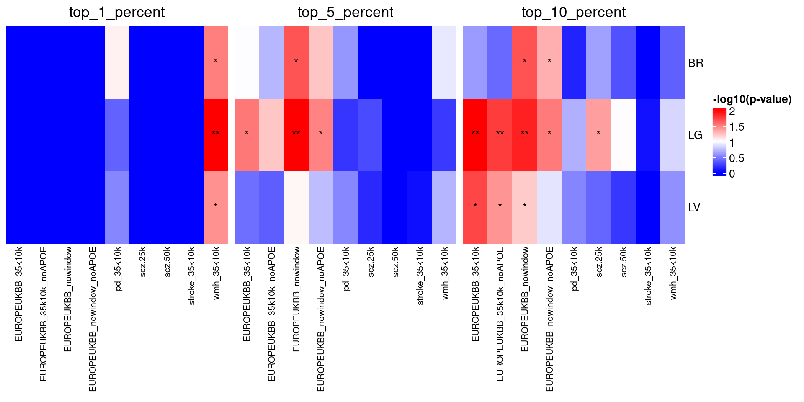

Code
library(dplyr)
library(ggplot2)
library(ggthemes)
library(tximport)
library(pheatmap)
library(tibble)
library(purrr)
library(readr)
library(here)
library(stringr)
library(gt)
library(ComplexHeatmap)Gabriel Mateus Bernardo Harrington
So the idea of using a tool like MAGMA is to try and see if we observe enrichment for risk genes in particular groups. The common example is to look at celltypes with single cell seq data. Perhaps you’ve heard microglia come up a lot in AD as a major celltype of interest? A lot of that interest came about when we realised microglia are very enriched for the risk genes in AD, suggesting they play an important role in the disease.
This type of approach relies on having decent GWAS data for your condition of interest so we know what risk genes exist. This means it’s important to be aware of the quality of the GWAS you’re using, as there are many GWAS studies that aren’t particularly well powered for example. The majority of GWAS studies are also done in largely white populations of European decent, so there’s also a lack of representation of most of the worlds genetic diversity.
In dementia, there’s also the issue of unreliable diagnosis within GWAS. Some proportion of cases are probably mislabelled, for instance someone diagnosed with one type of dementia who actually has a different type, or someone who does have the disease they are diagnosed with, but also have additional dementia (like vascular dementia, the most common secondary dementia), either of which muddies the water of any GWAS data. Additionally there’s the controversy around the use of proxy cases, where dementia status is inferred based on familiy history (often self-reported family history too…), so you may see analysis done with and without proxy cases included in the GWAS summary stats.
Lastly, AD in particular is a funny case in that APOE is the biggest risk gene by a huge margin, so it can sometimes cover up the effect of smaller genes. So you may see folk doing analysis with and without APOE included in the summary stats for AD in the literature.
So in our case we’re interested in the .gsa.out files MAGMA has produced as these contain the stats for if our gene lists were significantly enriched for our risk genes. A fun complication is the our schizophrenia and white matter hyperintensities outputs have a 4 line header to skip when reading the file in, whereas all the others have a 3 line header.
Also note that I process the ppi module lists here as well. What do you think the advantage of adding that data here for analysis is? Why not just copy all this code to a new file or just add it to the rest of the PPI code and just change the input data?
Add your thoughts below:
# List files
files <- list.files(here::here("data/magma/results"),
pattern = "*.gsa.out", full.names = TRUE)
files_ppi <- list.files(here::here("data/ppi/magma_results"),
pattern = "*.gsa.out", full.names = TRUE)
files <- c(files, files_ppi)
# separate scz files
files_scz <- files[grepl("_scz|_wmh_", files)]
files_no_scz <- files[!files %in% files_scz]
# Read data
data <-
map(files_no_scz, ~ read.delim(
.x,
skip = 3,
header = TRUE,
sep = ""
))
data_scz <-
map(files_scz, ~ read.delim(
.x,
skip = 4,
header = TRUE,
sep = ""
))
# Function to add the group and adjust the pvals
process_magma_data <-
function(df,
filename) {
df <- df |>
# Add groups and adjusted pvals to data
dplyr::mutate(group = filename,
p_adj = p.adjust(P, method = "bonferroni"))
return(df)
}
scz <- map2(data_scz, files_scz, ~ process_magma_data(.x, .y)) |>
list_rbind() |>
as_tibble()
non_scz <- map2(data, files_no_scz, process_magma_data) |>
list_rbind() |>
as_tibble()
# combine data
df <- rbind(scz, non_scz)
# Use str_extract() to extract get the percent of genes used
df$percent_genes <- str_extract(df$group, "\\d+_percent")
# clean up the group strings
df$group <- basename(df$group) |>
str_replace("magma_input_genes_", "") |>
str_replace("ppi_sig_modules_", "") |>
str_replace("\\d+_percent_", "") |>
str_replace("_gene_analysis", "") |>
str_replace(".gsa.out", "")
# Get label of PPI
df$ppi <- ifelse(grepl("_module", df$VARIABLE), "PPI", "Not-PPI")
df_ppi <- df[df$ppi == "PPI",]
df <- df[df$ppi == "Not-PPI",]
gt::gt(head(df))| VARIABLE | TYPE | NGENES | BETA | BETA_STD | SE | P | group | p_adj | percent_genes | ppi |
|---|---|---|---|---|---|---|---|---|---|---|
| BR | SET | 453 | -0.018014 | -0.0027569 | 0.050638 | 0.63898 | scz.25k | 1 | 1_percent | Not-PPI |
| LG | SET | 441 | -0.036286 | -0.0054812 | 0.050910 | 0.76199 | scz.25k | 1 | 1_percent | Not-PPI |
| LV | SET | 445 | -0.018273 | -0.0027725 | 0.050262 | 0.64191 | scz.25k | 1 | 1_percent | Not-PPI |
| BR | SET | 453 | -0.024477 | -0.0037405 | 0.049337 | 0.69009 | scz.50k | 1 | 1_percent | Not-PPI |
| LG | SET | 441 | -0.024758 | -0.0037342 | 0.050784 | 0.68705 | scz.50k | 1 | 1_percent | Not-PPI |
| LV | SET | 445 | -0.018610 | -0.0028194 | 0.050612 | 0.64345 | scz.50k | 1 | 1_percent | Not-PPI |
Let’s get a quick table of significant associations
Let’s try making a heatmap to visualise the results as well
# Transform the p-values to -log10(p-value) to enhance the visualization of small p-values
df$log_p <- -log10(df$p_adj)
# Nest data on broad groups
df_nest <- df |>
dplyr::arrange(group, ppi) |>
dplyr::group_by(percent_genes) |>
tidyr::nest()
get_heatmap_data <- function(df) {
# Prepare the data for the heatmap
heatmap_data <- df |>
dplyr::select(VARIABLE, log_p, group) |>
tidyr::pivot_wider(names_from = VARIABLE, values_from = log_p) |>
as.data.frame()
rownames(heatmap_data) <- heatmap_data$group
# Remove the first column if it contains row names (cell types)
heatmap_data <- heatmap_data[, -1]
heatmap <- t(heatmap_data)
# Replace any NAs with 0
#heatmap[is.na(heatmap)] <- 0
return(heatmap)
}
heatmap_data <- map(df_nest$data, get_heatmap_data) |>
set_names(paste0("group_", df_nest$percent_genes))This is a little elaborate, but the function overlays some standard significant thresholds over the heatmap.
make_heatmap <- function(heatmap_data, plot_title) {
# Define significance thresholds
sig_threshold1 <- -log10(0.05) # Corresponds to p < 0.05
sig_threshold2 <- -log10(0.01) # Corresponds to p < 0.01
sig_threshold3 <- -log10(0.001) # Corresponds to p < 0.001
# Create an annotation matrix with the same dimensions as 'heatmap'
annotation_matrix <-
matrix(
"",
nrow = nrow(heatmap_data),
ncol = ncol(heatmap_data)
)
# Populate the annotation matrix with '*', '**', or '***' based on significance levels
annotation_matrix[heatmap_data > sig_threshold3] <-
"***"
annotation_matrix[heatmap_data > sig_threshold2 &
heatmap_data <= sig_threshold3] <- "**"
annotation_matrix[heatmap_data > sig_threshold1 &
heatmap_data <= sig_threshold2] <- "*"
# Define a color palette for the heatmap
color_palette <- colorRampPalette(c("blue", "white", "red"))(100)
# Create the heatmap with customizations
plot <- Heatmap(
heatmap_data,
name = "-log10(p-value)",
col = color_palette,
# Use the defined color palette
cell_fun = function(j, i, x, y, width, height, fill) {
if (annotation_matrix[i, j] != "") {
grid.text(annotation_matrix[i, j], x, y, gp = gpar(col = "black", fontsize = 10))
}
},
# Adjust the clustering method if necessary
cluster_rows = FALSE,
cluster_columns = FALSE,
# Show row and column names
show_row_names = TRUE,
show_column_names = TRUE,
# Adjust the size of row and column names
row_names_gp = gpar(fontsize = 10),
#column_names_rot = 45,
column_names_gp = gpar(fontsize = 8),
column_names_max_height = max_text_height(colnames(heatmap_data),
gp = gpar(fontsize = 500)),
column_title = plot_title
)
return(plot)
}
# Get heatmaps
heatmaps <-
map2(heatmap_data,
names(heatmap_data) |>
str_replace("group_", "top_"),
make_heatmap)
# Print them together
hmap_list <- heatmaps$group_1_percent + heatmaps$group_5_percent + heatmaps$group_10_percentWarning: Heatmap/annotation names are duplicated: -log10(p-value)Warning: Heatmap/annotation names are duplicated: -log10(p-value),
-log10(p-value)
Notice anything interesting about the results in Figure 1? Feel free to write up your thoughts below!
Since we don’t have different percentages of genes to think about, let’s look at both the nominal and adjusted pvals.